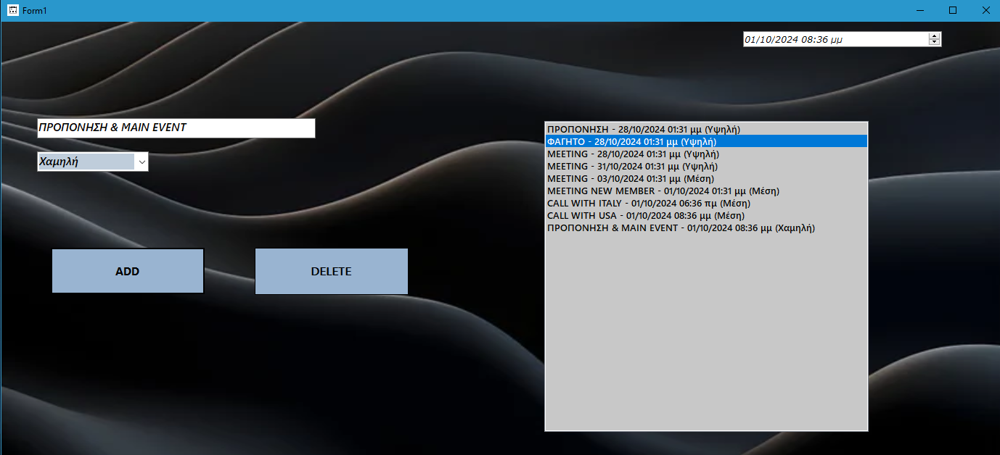
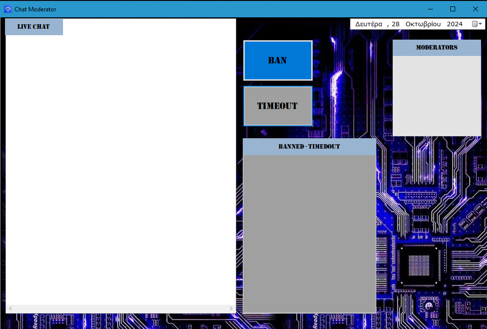

My Projects
Network Manager

This project is a Network Manager application that allows the user to monitor and manage network and VPN connections on their computer.
The application is written in C# and uses the Windows Forms library for the graphical user interface (GUI).
Following is a detailed description of the functions and features of the application:
- Real-time status display of the network and VPN.
- Enable/disable network or VPN with button presses.
- Refresh available networks or connect to a specific VPN through the GUI.
- Log file for recording all actions and changes.
Network Details: The project can display details about the network status, such as encryption type (e.g., WPA2), speed (download/upload), and number of connected devices.
Automatic Network Refresh: The application can automatically refresh the list of available networks every few seconds.
Monitoring Features:
- Connected Network Name: Displays the name of the connected network.
- Connection Duration Monitoring: Shows duration of network and VPN connections.
- Connection Status Updates: Labels display the current status with color-coded feedback.
- Automatic Notifications: On-screen notifications for network or VPN status changes.
Basic Functions:
- Enable/Disable Network: Toggle network status with visual feedback.
- Connect/Disconnect VPN: Button control with visual notifications for VPN status.
- Available Networks: View all Wi-Fi networks and refresh the list.
- Ping and Speed Monitoring: Shows ping and speed status.
- Automatic Network Switching: Monitors network availability and switches if disconnected.
- Network Reconnect: Attempts to reconnect if the network connection is lost.
Organizer (To-Do List)
The To-Do List project is a daily task management application that allows the user to organize and track tasks.
The application is written in C# and uses Windows Forms for the GUI.
Main Functions:
- Add new tasks with name, date, time, and priority (High, Medium, Low).
- Delete tasks individually or clear the entire list.
- Automatic Notifications: Reminders for tasks nearing deadlines.
- Save and Load Tasks: Tasks are saved to a file and loaded when the app starts.
Monitoring Functions:
- Task Notification: Reminds the user of tasks scheduled within the next 10 minutes.
- Status Updates: Displays task list with dates, times, and priorities.
- Automatic Status Update: Timer checks task deadlines regularly.
Architecture:
- GUI: Buttons, text fields, and lists for easy interaction.
- Labels and Notifications: Displays task info and pop-up reminders.
- Timer: Monitors tasks and triggers notifications as needed.
- Data Storage: Tasks are saved in a file, while actions are logged in a separate log file.
Chat Moderator
This project is a real-time chat moderation tool that allows moderators to monitor and manage chat messages.
Project Overview:
The Chat Moderator project is a real-time chat moderation tool designed to manage a chat server. It consists of a server in C++ and a client UI in C# with the following functionalities:
Functionalities:
- Real-Time Chat Monitoring:
- The C++ server simulates a real-time chat environment by continuously generating user messages, some of which may contain prohibited language or spam.
- The C# client (Chat Moderator UI) connects to the server and displays these messages in a ListBox (
lstChat) for the moderator to monitor.
- Message Display and Interaction:
- Messages received from the server are displayed in the
lstChatbox. - The moderator can click on specific messages to select a user for further action (ban or timeout).
- Messages received from the server are displayed in the
- Moderation Controls:
- Ban Button: The moderator can select a user’s message and click "BAN" to prevent the user from further participation. This action is sent to the server, which updates its list of banned users, filtering out any future messages from them.
- Timeout Button: The moderator can use the "TIMEOUT" button to temporarily restrict a user. This action is sent to the server, where the user is placed in a timeout status, limiting them from posting for a defined period.
- Moderator and Banned/Timeout Display:
- Moderators ListBox: Displays a list of active moderators managing the chat.
- Banned/Timeout ListBox: Shows users who have been banned or are currently in timeout. This box updates as actions are taken and provides moderators with a clear view of the enforcement status.
- Background Functionality:
- The connection to the server runs on a background thread, continuously listening for new messages while allowing the moderator to take actions seamlessly.
- The project is designed to handle exceptions gracefully, ensuring the UI remains responsive even if the server experiences connectivity issues.
- Design and Usability:
- The UI elements are designed for clarity and ease of use, with distinctive buttons for actions and a well-structured chat display.
- The ListBox components are organized to make it easy for moderators to view chat messages, manage moderators, and track banned or timed-out users.
Purpose:
This project is intended to simulate a real-time chat moderation tool that handles both the technical and interface aspects of managing a live chat environment. It demonstrates how to use C++ for server management alongside C# for a polished, interactive client interface.